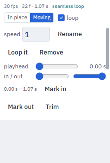
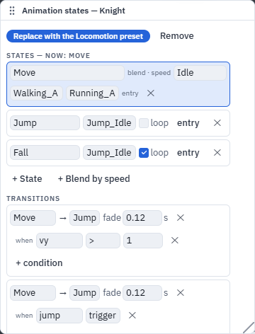

Characters and motion
Any rigged model is a character, any clip plays on any humanoid, and the clips are small files of their own. Characters and motions come as free CC0 packs, and a character downloads with its clips for Blender, Unity, Unreal or Godot.
Rigged characters
- Any model with a skeleton — a
.vrm, a rigged.glb/.fbx(Mixamo, Meshy, UniRig, KayKit, Quaternius, VRoid) — is a character. It reaches every peer as its original file, so its rig is exact everywhere. - Inspector ▸ Character shows the rig family and how much of the VRM 1.0 humanoid it maps ("Mixamo · 52 of 55 humanoid bones"), the clips applied to it, its licence, and three ways in: Apply clip…, Skeleton…, Download…. The same three are under the object's right-click menu ▸ Character.
Humanoid map + Apply clip…
- Every character's bones are named onto VRM 1.0's humanoid bone set, detected automatically: by bone names
(Mixamo, KayKit, Meshy, VRoid/UniRig
J_Bip_*, Unrealpelvis/thigh_l, Rigify/QuaterniusDEF-*), by the hierarchy (which spine bone is the chest is read from the path between hips and head), and — for numbered bones such as UniRig'sbone_0…— by the rig's shape. A VRM brings its own map. - Apply clip… plays a clip on any mapped humanoid: pick the clip (one another model in the scene plays, or the
built-in avatar motions, a
.tpanimclip file in your Explorer, listed under Clip files, or any clip of the Motion pack), tick the characters, Apply. The clip is fitted to each character's own skeleton — rest pose and facing corrected, the hips' travel scaled to its size — on every peer for itself: the model's file never changes, and a late joiner computes the same clip. Also from the Animation window's Imported clips header: Apply to…. - Remove an applied clip with ✕ in Inspector ▸ Character. Undo works.
- Fix the map in Skeleton… ▸ Humanoid map: each VRM bone shows the rig bone it uses (detected or your pick, or not mapped); Reset fixes goes back to the detected map. Fixes travel to peers; the file is untouched.
VRM characters
.vrmfiles (VRM 0.x and 1.0, also a VRM renamed.glb) import with spring bones (hair, cloth swing as the character moves), expressions (Inspector ▸ Character ▸ Expression + weight, or the Set Expression flow node: expression name + weight when a pulse arrives) and their licence meta (title, authors, commercial use, redistribution, modification, credit, licence link) in the Inspector.- The VRM runtime is loaded only when a scene has a VRM. VRM 0.x models are turned to face +Z like everything else.
- Limits: MToon materials render as standard materials; VRM characters as player avatars is a follow-up (they need LODs: the avatar budget is 10k triangles, 1 material).
Skeleton… (rig fix-ups)
- Tabs Humanoid map, Bones, Weights. Loaded only when opened (a player of an exported game never downloads it). The viewport shows the skeleton and the picked bone while it is open.
- Bones: pick a bone in the tree, then Rename, set its Rest position and Move, Add child, Delete
(its children move up to its parent, its weights go to the parent), Mirror left → right / right → left
(bones paired by name: Left/Right,
.l/.r,_l/_r,L_/R_). - Weights: Automatic weights (bone heat: every vertex starts on its nearest bone and the heat diffuses over the surface — never across a gap between two legs — computed in a worker), Smooth, Normalize (≤ 4 bones per vertex), a weight brush for the picked bone (radius, strength, erase; paint on the model) and a test pose slider that bends the picked bone here only.
- Each edit rewrites the model's file and sends it to peers once when it ends (a brush stroke is one edit); one Undo puts the old file back everywhere. Rig fix-ups edit GLB / VRM files — an FBX character must be downloaded as GLB and re-imported first. Full rigging stays a Blender job.
Download…
- Object ▸ Download… (or Inspector ▸ Character ▸ Download…): tick the clips and pick a layout —
One GLB (default: the model with the clips embedded — what Blender, Unity, Unreal and Godot expect),
Model + clips (a zip: the model and one
.tpanimper clip), Model only. Applied clips are baked onto the character's own skeleton. The model's bytes are its own: a GLB/VRM keeps everything it had (a VRM stays a.vrm). - One clip downloads as
.tpanim,.glb(skeleton + clip),.vrma(VRM Animation, humanoids only) or.bvh(for Blender, MotionBuilder, Cascadeur: every joint at the same place as in the app). - FBX / USD are listed but off: they need an AI box with the convert capability (roadmap 58).
- Several selected objects download as one zip (with a
CREDITS.txt).
Provenance + licence warnings
- Every imported, generated, rigged, retargeted or converted asset records where it came from:
{tool, model, version, licence, prompt?, date}(on the object, in the scene file, and in a downloaded GLB's extras). Inspector ▸ Character shows the licence and the last step. - Licences that ask something — credit (CC-BY), non-commercial, no modification, or a VRM that says "no
redistribution" — show a warning at the top of Publish, Export, Community gallery and Download. It never
blocks: you decide. Exports write a
CREDITS.txtfor everything that carries a licence.
Packs (CC0 only)
- Characters (
characters-kit): 8 VRM avatars from 100Avatars by Polygonal Mind (CC0) and Quaternius' two mannequins (CC0). Every one is a full humanoid, so every motion plays on it. - Motion (
motion-kit): 87 humanoid clips from Quaternius' Universal Animation Library 1 + 2 (free Standard tiers, CC0): locomotion, jumps, sitting, swimming, combat, interactions… each a.tpanim(VRM Animation inside). Asset Browser ▸ Motion lists them: Add to Explorer, then drag one onto a character. Apply clip… lists them too, and the Locomotion preset fills whatever a humanoid lacks from this pack. - Asset Browser ▸ Avatars: VRM avatars from the Open Source Avatars registry. CC0 collections are listed by default; tick Include CC-BY for the ones that ask for credit. Add to scene places the avatar as a VRM character, and a CC-BY one keeps its credit, so Export and Publish remind you of it.
- The packs CI lints the licence of every file: each one needs a CC0 record, and a VRM must say CC0 in its own meta.
Animation clips are their own files (.tpanim)
A clip is a small file in the Explorer (kind Animation clips, the standing-figure icon). The model it plays on never changes: assigning a clip adds a reference to the model, the clip's bytes travel to your peers once, and every peer applies it to its own copy of the model.
- Import: drop a
.tpanim,.vrma,.bvh, an animation-only.glb(nodes + animations, no meshes) or an animation-only.fbx(Mixamo "Without Skin") into the Explorer. Each animation in the file becomes one.tpanimclip (<file> - <animation>.tpanimwhen there are several). A model file (it has meshes) imports as a model, as before. - Play on a character: drag a clip from the Explorer onto a rigged model in the scene. It is assigned and starts playing on every peer. One undo step removes it again.
- Rigged models with no clips of their own (a character exported without animations) now import as animated models, so clips can be assigned to them.
- Clips assigned to a model are saved with the scene; a
.tpscenebundles the clip files the scene uses (and only those). A late joiner receives the clip once.
Which clips fit which model
- Humanoid clips are stored on the standard VRM 1.0 humanoid bone set, so one clip plays on any character whose bones are mapped (VRM characters map themselves; other rigs are mapped by name — Mixamo names out of the box, more rigs with the humanoid map from Characters).
- Other clips (a creature, a machine, a door) play on models with the same skeleton — the same bone names. A clip made for another skeleton says so when you drop it.
The .tpanim format (spec, format 1)
A .tpanim file is a binary glTF 2.0 file (GLB). Rename it to .glb and any glTF tool opens it.
- Humanoid clips are valid VRM Animation (
VRMC_vrm_animation1.0): rename one to.vrmaand it plays in VRM tools (three-vrm, UniVRM, VRoid-compatible viewers). They are written in VRM's normalized space: one node per humanoid bone, named after the bone (hips,spine,leftUpperArm, …), every rest rotation identity, offsets in metres in the character's frame. The rotations stored are the normalized local rotations; onlyhipscarries a translation track. The node offsets keep the source character's rest pose (an A-pose arm points down), which a rest-pose correction uses when the clip is applied to a T-pose character. - Other clips are a plain GLB holding the source skeleton's nodes in their rest pose (no meshes, no skin) and one animation targeting those nodes by name.
- Both carry
extras.theprototypeon the glTF root:
{
"format": 1,
"kind": "clip",
"skeleton": { "sig": "sk1-42-1a2b3c4d", "humanoid": false },
"fps": 30,
"frames": 24,
"loop": true,
"rootMotion": "moving",
"provenance": { "tool": "import", "source": "walk.fbx", "date": "2026-10-23" }
}
| field | meaning |
|---|---|
format |
1 |
kind |
always "clip" |
skeleton.sig |
the skeleton signature: a hash of the bone names + parents (sk1-<bones>-<hash>); humanoid clips use vrm1-… over the humanoid bones they carry |
skeleton.humanoid |
true = a VRMA humanoid clip |
fps |
the rate the keys were made at (the Animation window's frame grid) |
frames |
length in frames (duration = frames / fps) |
loop |
the clip is meant to loop |
rootMotion |
"moving" (the root travels) or "inplace" (forward travel stripped, height kept) |
provenance |
where it came from: {tool, model?, version?, licence?, prompt?, date, source?} |
A file without these extras (a .vrma from another tool, an animation .glb) is read with defaults
(fps from the key spacing, loop off, moving) and gains them when it is imported.
Limits
- One animation per
.tpanimfile. Morph-target (blend-shape) and material tracks are not part of a clip file. - Humanoid clips carry rotations for every bone plus the hips' position (the VRMA rule); a clip that moves other bones' positions keeps only their rotations as a humanoid clip.
Game-ready clips (Animation window ▸ clip tools)

Select a character and open the Animation window. Under its clips, the clip tools show for the clip that is playing:
- fps · frames · length of the clip, whether it is humanoid, and the loop seam: "seamless loop" when the last frame meets the first, or "loop seam 4.2°" when the loop jumps.
- In place / Moving: In place keeps the clip's height but removes its forward travel, so the character controller (or a Blend by Speed node) moves the character; Moving lets the clip carry it.
- loop (off = play once and hold the last frame), speed (this clip's own speed on this character), Rename, Remove (the file stays in the Explorer).
- Loop it makes a new clip whose last frames blend into its first, so it loops without a jump.
These settings belong to the character (another character using the same clip file keeps its own). Loop it, Trim, Split and Join make new clip files; the original stays in the Explorer.
Split and join (cut a long take into Walk, Turn, Stop)
- Move the playhead to preview a moment (only on your screen), set the in and out markers (or Mark in / Mark out at the playhead), then Trim keeps the part between them, or Split at playhead makes two clips.
- Join clips…: tick two or more clips in order, choose a crossfade, and Join makes one clip that plays them one after another, blending at each seam. The character keeps travelling across the seams.
- Extract clips (for a model that brought its own clips): turns them into
.tpanimfiles in the Explorer, so they also play on other characters. use the files instead switches the model's own clips off and plays the files under the same names (the model file is not changed; undo brings the embedded clips back).
Flow nodes
- Play Animation gains Crossfade (s): changing clip blends from the one already playing.
- Blend by Speed (Animation group): blends a character's idle, walk and run clips by a speed — the character's own speed when nothing is wired — so it never snaps between poses. Empty clip fields pick the character's clips by name (Idle / Walk / Run). Walk and run play faster or slower to match the speed.
Animation states (a locomotion state machine)

Animation window ▸ Animation states… opens the states window for the selected character.
- Locomotion preset: one click builds Move (idle / walk / run blended by speed), Jump and Fall from the character's clips (a humanoid gets the ones it lacks from the Motion pack, so a fresh VRM works at once), driven by how the character moves — possess it (Player), drive it from logic, or let an NPC wander, and it walks, runs, jumps and lands with crossfades. No wiring.
- States are a clip (loop or once) or a Blend by speed; transitions go from a state (or
Any state) to another when all their conditions hold (
speed > 2,grounded true,jump trigger), with a fade time; a once-state can wait for its clip (exit time). - Parameters: numbers, yes/no values and triggers. With from its motion on,
speed,vy(vertical speed) andgroundedcome from how the object moves. The live values and the current state show in the window; Fire fires a trigger on every peer. - Nodes: Set Animation Parameter (set a value on a pulse, hold a wired value, or fire a trigger
such as
jump) and On Animation State (a pulse when the character enters a state). - The graph is part of the character: it is saved, replicated and exported with it, and every peer runs it itself, so a character looks the same for everyone without extra traffic.
Animate imported parts
A model's named parts (child nodes — a rotor, a door, a lid; what an img2threejs model brings)
can be animated: drop a clip on the model, or let the assistant do it with animate_parts
("make the rotor spin": one clip on the named part, saved as a .tpanim, one undo step).
Attach to Socket (node): on a pulse, an object follows one of a model's named nodes (a sword in
a hand, a lamp on a rotor arm) — or lets go, staying where it was.
animate_parts (assistant / agent tool)
{ "object": "<uuid or name>", "clip": "Spin", "loop": true, "mode": "relative",
"tracks": [ { "part": "rotor", "keys": [ { "t": 0, "rot": [0, 0, 0] }, { "t": 1, "rot": [0, 360, 0] } ] } ] }
keys[].pos metres [x, y, z], rot Euler degrees [x, y, z] (or a quaternion), scale a factor;
mode: "relative" (default) = offsets from each part's rest pose, "absolute" = local values. A turn
longer than 90° between two keys is split so a full turn spins. play: false assigns without playing.
Limits (motion)
- Blend by Speed and the states graph blend at most the clips they name; their phases are per device (a walk's step can be a fraction of a cycle apart between two screens).
- Possess (the Player) has no jump of its own: a jump comes from vertical motion (a physics hop,
logic) or the
jumptrigger (Set Animation Parameter, the window's Fire). - A part clip binds by node name: renaming a part in the model breaks the clip for that part.
- A clip whose share weight in a blend falls under 1 % is skipped (the rest renormalize), so a settled Move state costs one clip, not three.
What it costs (Quest profile)
Animation tick per frame, measured on the CPU throttled ×4 (the Quest budget), 1280×720, KayKit knights:
| Knights | One clip, median (p95) | Locomotion states, median (p95) | Scene |
|---|---|---|---|
| 1 | 0.1 (0.7) ms | 0.5 (1.1) ms | 2 draw calls · 4.8 k tris |
| 4 | 0.3 (1.1) ms | 0.8 (1.6) ms | 5 draw calls · 18.9 k tris |
| 8 | 0.7 (1.2) ms | 1.3 (3.0) ms | 9 draw calls · 37.7 k tris |
A 72 Hz frame is 13.9 ms. Measured on a busy build machine (load ≈ 18 on 16 cores), so the p95 column is pessimistic; a real-headset row is owed.
Third-party notices
- Characters pack: 100Avatars by Polygonal Mind (CC0 1.0), mannequins by Quaternius (CC0 1.0).
- Motion pack: Universal Animation Library 1 + 2, Standard tiers, by Quaternius (CC0 1.0).
- Runtime: three-vrm by pixiv (MIT), loaded only for scenes with a VRM.
- Avatars tab: the Open Source Avatars registry; each collection has its own licence, shown on its avatars.